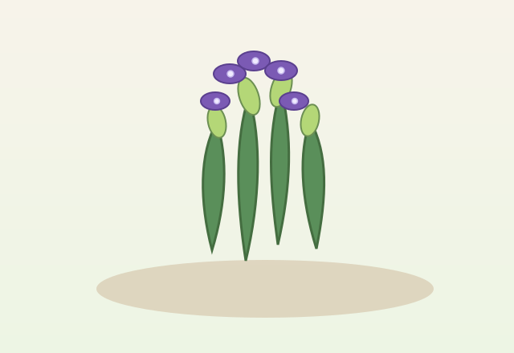

Herb profile
Lavender
Lavender is a fragrant herb with soft purple flowers and a calming scent that suits sunny, dry borders and bee-friendly gardens.

Why gardeners love it
Lavender is prized for its beautiful flowers, calming scent and ability to attract bees. It grows best in sunny, well-drained soil and adds a gentle fragrance to borders, pots and drying bundles.
- Thrives in warm, sunny conditions.
- Attracts pollinators and supports a healthy garden.
- Useful in sachets, infusions and dried floral arrangements.